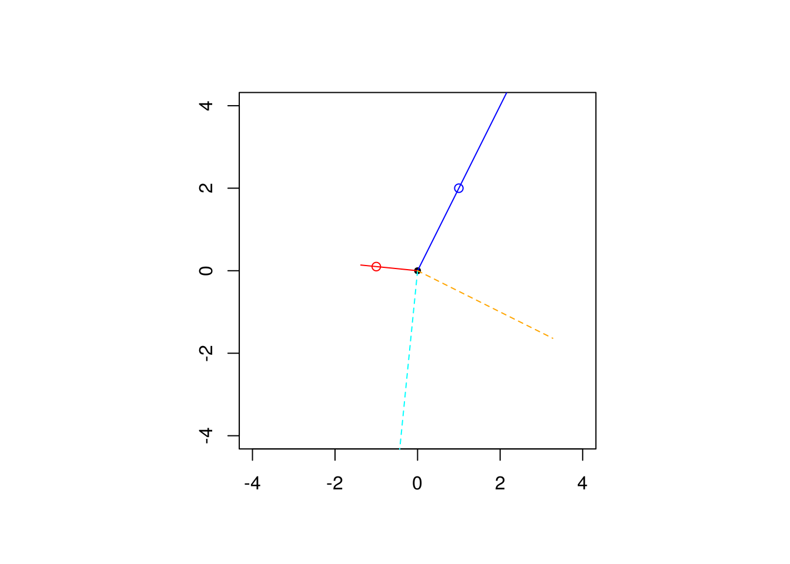

1.3 Exercises
1.3.1 Auto dataset
- Install the R package
ISLRand load the datasetAuto. Be careful, as R is case-sensitive. - Query the help file for information about the dataset.
- Look at the first lines of
Auto - Create an explanatory variable
xwith horsepower and mileage per gallon as responsey. - Create a scatterplot of
yagainstx. Is there evidence of a linear relationship between the two variables? - Append a column vector of ones to
xand create a projection matrix. - Check that the resulting projection matrix is symmetric and idempotent.
1.3.2 Oblique projections (exercise 1.4)
Suppose that \(\mathsf{span}(\mathbf{X}) \neq \mathsf{span}(\mathbf{W})\), that both \(\mathbf{X}\) and \(\mathbf{W}\) are full-rank \(n \times p\) matrices such that \(\mathbf{X}^\top\mathbf{W}\) and \(\mathbf{W}^\top\mathbf{X}\) are invertible. An oblique projection matrix is of the form \(\mathbf{P}\equiv\mathbf{X}(\mathbf{W}^\top\mathbf{X})^{-1}\mathbf{W}^\top\) and appears in instrumental variable regression. The oblique projection is such that \(\mathrm{im}(\mathbf{P})=\mathsf{span}(\mathbf{X})\), but \(\mathrm{im}(\mathbf{I}-\mathbf{P})=\mathsf{span}(\mathbf{W}^\perp)\). This fact is illustrated below.
We consider two non-parallel vectors in \(\mathbb{R}^2\), \(\mathbf{X}\) and \(\mathbf{W}\).
#Create two vectors (non-parallel)
x <- c(1, 2)
w <- c(-1, 0.1)
#Create oblique projection matrix
P <- x %*% solve(t(w) %*% x) %*% t(w)
isTRUE(all.equal((P %*% P), P)) #P is idempotent## [1] TRUE## [,1] [,2]
## [1,] 0.000 -2.625
## [2,] 2.625 0.000The figure below shows the projection of a third vector \(\mathbf{v}\) (non-parallel to \(\mathbf{X}\) or \(\mathbf{W}\)) onto the span of \(\mathbf{P}\) (blue), \(\mathbf{P}^\top\) (red), \(\mathbf{I}_2-\mathbf{P}\) (dashed cyan) and \(\mathbf{I}_2-\mathbf{P}^\top\) (dashed orange). The circles indicate the vectors \(\mathbf{W}\) (red) and \(\mathbf{X}\) (blue) on the plane. Notice that \(\mathbf{I}_2-\mathbf{P}^\top \perp \mathbf{P}\), whereas \(\mathbf{I}_2-\mathbf{P} \perp \mathbf{P}^\top\).
